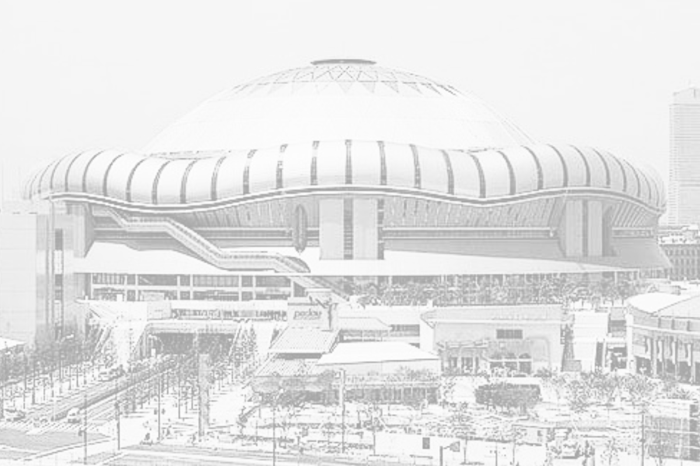
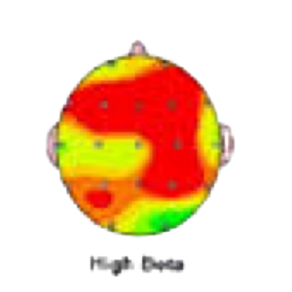
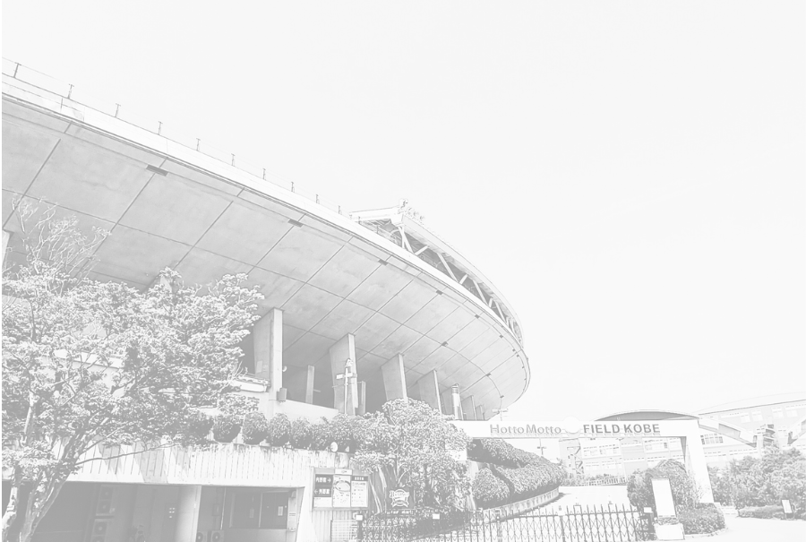
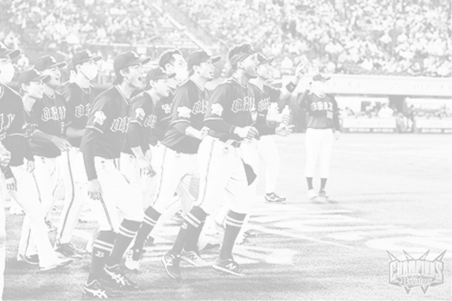
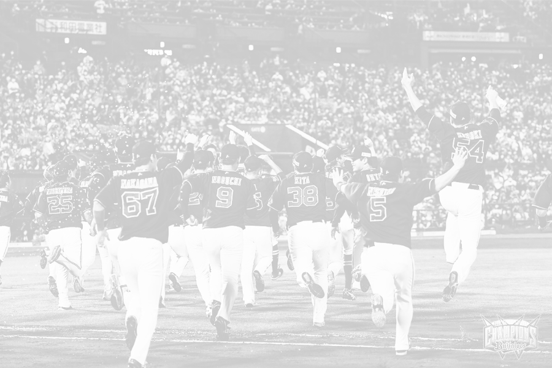
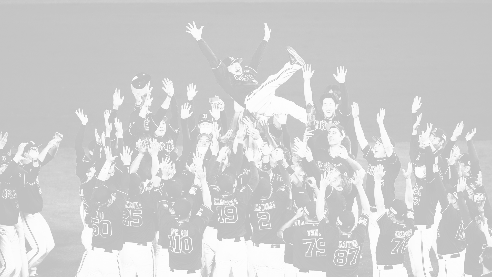

ダイキャノンにとっての野球観戦

ある朝突然...
2022年9月、僕は公立中学の教師をしていました。
どんな仕事にもありがちだけど、
ある朝突然、ベッドから出られなくなりました。
そして精神科へ。
脳波を測定すると、通常は黄色が多いはずが、僕の脳波は真っ赤！
医師に「1ヶ月ほど休みましょう」と言われ、
教師人生初の療養休暇を取る事になりました。
一体自分はどうなってしまうのだろうか…
すごく不安になって、どうしたらいいか、わかりませんでした。


オリックス・バファローズ2022
その頃、僕の大好きなオリックス・バファローズは
福岡ソフトバンク・ホークスと優勝争いをしていました。
オリックスの快進撃は続くものの、
依然、ソフトバンク・ホークスの方が圧倒的に有利でした。
そして、ペナントレース最終戦。
どっちのチームにも負けられない試合が繰り広げられます。
オリックスは仙台での楽天戦。ソフトバンクは千葉でのロッテ戦。
この１戦で優勝が決まります。

優勝確率1/9
ソフトバンクは勝つか、引き分けで優勝。
ソフトバンクが負けた場合、オリックスが負ければ優勝。
オリックスは、勝った上にソフトバンクが負けなければ優勝はありません。
要するに、オリックスの優勝確率は１/９（９分の１）。
多くのオリックスファンが諦める中、現地では大きな声援が響きます。
そのおかげか、我らがオリックスは逆転勝利！
ソフトバンクよりも一足先に試合終了です。

世紀の大逆転優勝
一方、ソフトバンク・ホークスはリードしていたものの、
ホームランにより逆転されていました。
このまま行けば…
楽天モバイルパークの大きなビジョンに、球場にいる人全ての視線が注がれます。
そして試合終了から、わずか２分後
千葉ではフライが打ち上がり…
その瞬間、球場のあちこちで歓喜の輪ができていました。
スタンドには、周りの、お互い隣り合っただけの知らない人と抱き合う人々。
マウンドにはオリックス・バファローズの選手たち。
輪になって中嶋監督の胴上げが始まり、
スタンドのファンたちと喜びを分かち合います。

赤から緑
僕もそこにいました。
球場に行くと、嫌なこと、不安な事、悩み事、
何もかも忘れて夢中になれます。
中でも、この歴史に残る大逆転劇を球場で体験できたことは、
僕にとって一生の宝物です。
折しも、翌日は脳波測定の日でした。
僕の脳波は黄色を超えて、全体的に緑になっていました。
「何があったんですか！？こんな事、あり得ないです！」
医師もびっくりしていました。
結局、僕の療養期間は当初予定の1ヶ月から２週間に短縮され、
教師として復帰することができました。
間違いなく、オリックス・バファローズがくれた感動が、
僕の適応障害を治してくれたのです。
『ダイキャノン観戦会2025』
以上の経験をした僕が、
「球場の楽しさをいろんな人に体験してほしい、多くの人に広げていきたい！！」
との思いから、『ダイキャノン観戦会2025』を実施します！
野球が大好きでよく球場に行く人はもとより、
興味はあるけど、球場は未体験の人、子供、中学・高校生たち。
ぜひとも、一緒に野球観戦しましょう！
初めての方には、もちろん！ダイキャノンが
全力で楽しく観戦できるようにサポートしますので、ご心配なく。
ただし、球場観戦はホーム（京セラドーム、ほっともっと神戸）、
ビジター共にオリックス・バファローズ戦に限らせていただきます。
※応援はどこのチームでも問題ありません。
詳しくはこちら↓↓↓